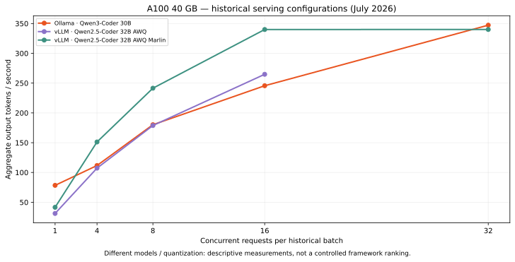

NVIDIA A100 · JUL 2026GPU inference benchmarks
A portable client for Ollama and vLLM. Measure concurrency, streaming latency, throughput and GPU resource use.
Includes historical A100 measurements. Different model configurations; not a controlled framework ranking.